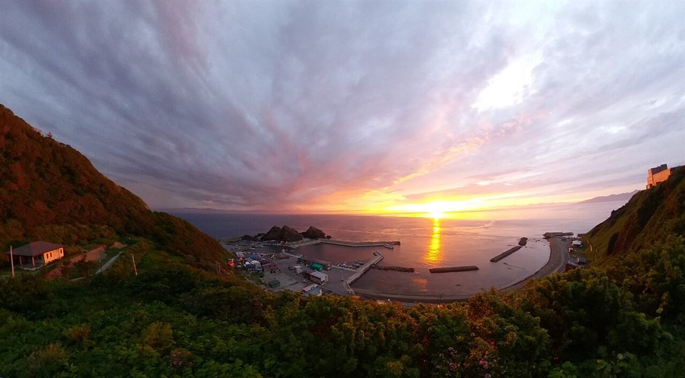
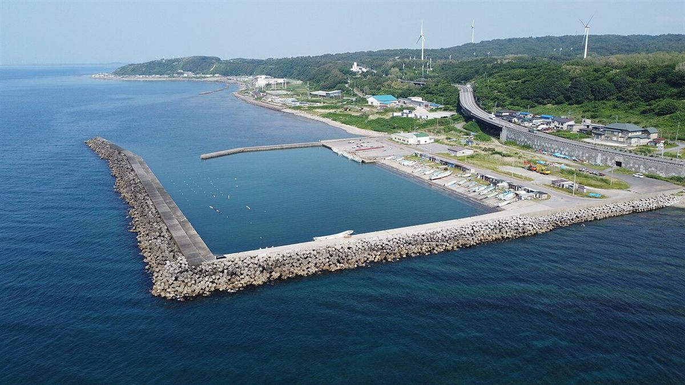
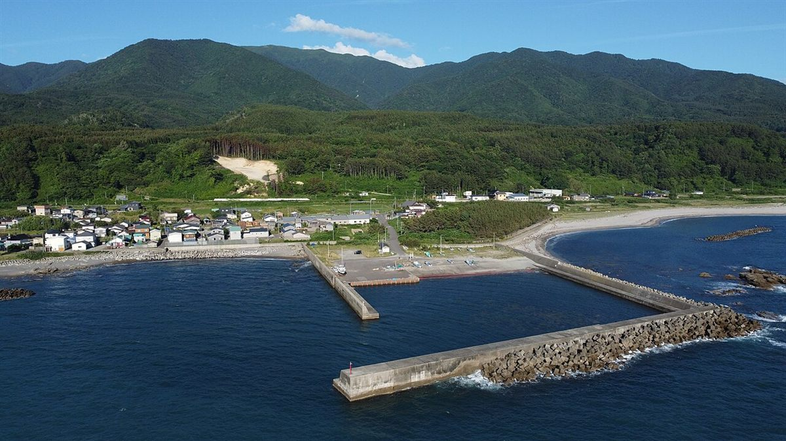
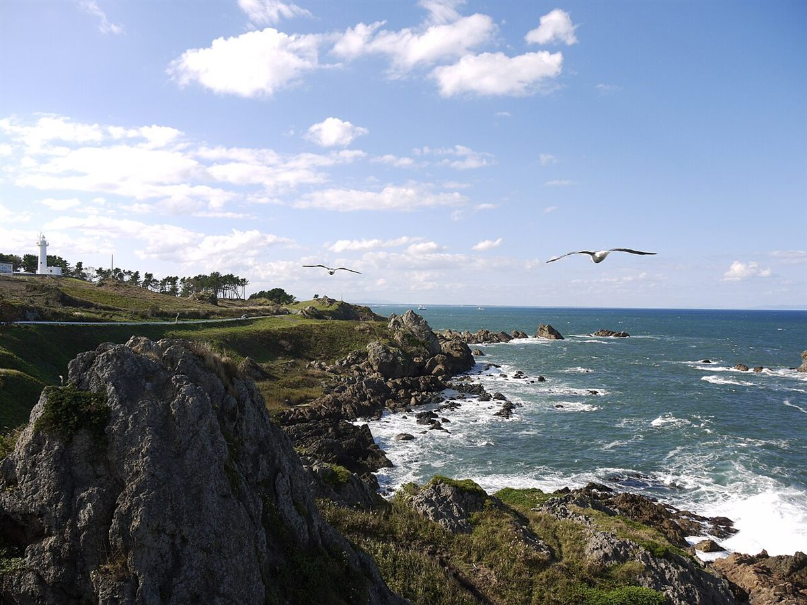

制作側の連想
「2号室」と「コーヒー」から考えたこと
店名の由来は分かりません。ご住所の末尾に「2A」とあることから、制作側は「建物の一室かもしれない」と想像しました(そうとは限りません)。そして酒田市は港のまち。そこで、ドアの向こうの小さな一室から、窓越しに霧や海や空を眺める、というテーマでページを組んでいます。お店の考えとは関係のない、制作側の連想です。
窓のむこう
海ぞいの景色を、4つ。
写真は酒田市の風景ではありません。港や海辺を思い浮かべて選んだ、国内他地域のイメージです。




ご案内
お店のこと(確認できたものだけ)
| 所在地 | 〒998-0045 山形県酒田市二番町10-10 2A |
|---|---|
| 電話 | なし |
| 営業時間 | 準備中 |
| 定休日 | 準備中 |
| ご予約 | 準備中 |
| 駐車場 | 準備中 |
| SNS | Instagram @2_tocoffee |